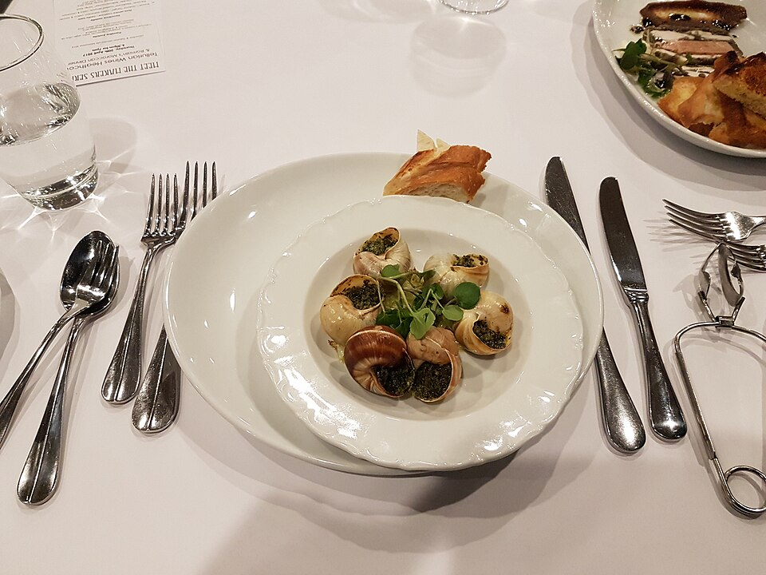
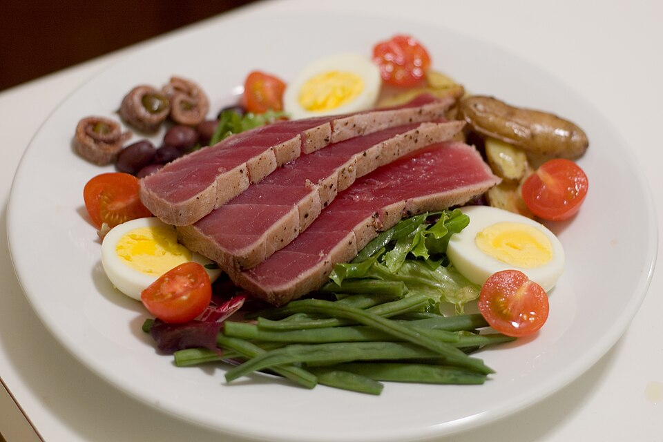

Bonjour!
L32 React · lecture 7 · track 6 of 10 · syllabus L34
Le
garde-manger
The pantry is the cool room behind the kitchen where the stock waits. Any cook walks in, takes the one thing they need and walks out. Nobody carries the whole stock around, and nobody asks the waiters.
- Theme
- Zustand, selectors, persist
- Le Bistro today
- A cart and a session in stores
- Your project
- v0.6 · a store
- Length
- 2 hours · one break
Le Bistro · L32 · 120 minutes
Today's menu
- AccueilHello where Le Bistro is today3′
- ApéritifQuestions and two homework demos8′
- EntréeProblem 1 25 cards flash for one click5′
- PlatZustand a store with selectors24′
- AtelierClasswork 1 your cart in a store15′
- Pause caféBreak music on, screens off10′
- Second platProblem 2 and the state map where does this live?27′
- AtelierClasswork 2 with AI prompt it, then check it15′
- MasterclassOne prompt, the whole Le Bistro CRAFT, then the short version8′
- DessertWrap-up recap, homework, what comes next5′
Route The second five lectures
Le Bistro, lecture by lecture
DoneL27 componentsL28 stateL29 effectsL30 routingL31 context

L32 · today
Stores
Zustand. One cart and one session, outside React.

L33
Forms
React Hook Form and Zod. A sign-up and a table slip.

L34
Cache
TanStack Query. The menu is fetched once.

L35
Changes
Mutations, optimistic updates, endless lists.

L36
UI
Accessible dialogs and shadcn/ui.
Today's goal Press next to unveil it
The same site, with the wrapping gone
Under the blind: main.tsx as it is now, with what disappears marked in red.
- No providers: two wrappers gone, four files deleted
- Add one dish: 1 card draws again, not 25
- The cart still survives F5
- Even
api.ts, not a component, can sign the guest out
Apéritif Before we start
Questions from last time?
Context, useReducer, compound components.
Who can call useAuth()?
Any component inside AuthProvider, at any depth. Outside it the hook throws a clear error.
Why must a reducer be pure?
The same cart and the same action must always give the same new cart. No fetch, no localStorage. StrictMode runs it twice to catch the ones that aren't.
Why two contexts and not one?
Every reader re-renders when its context changes. Two small contexts keep a cart change from waking the session readers. Today we go one step further.
Homework check Two volunteers, two minutes each
Show us your v0.5
Open the page, add the same product twice, press F5. Then open React DevTools, switch on Highlight updates when components render and add one more product.
Look for
- One line for a product added twice
- The cart is still there after F5
- No
cart=orsession=props left - The reducer has no
localStorageorfetch - The live Vercel link works
Entrée · Problem 1 Before the new tool
Twenty-five
cards.
One click.
You press "Add to cart" on one espresso. How many cards did React draw again?

Problem 1 Try it: click "Add to cart" on any card
Add one espresso, count the renders
On the real menu: 25.
We counted in the L31 app: one click, 25 DishCard renders. Only one of them changed.
Problem 1 Your turn
What would we need?
Solution 1 The pantry
A store lives outside React
Not a component
The store is a plain module: one object that holds the state and the actions. React does not own it, so it does not re-render it.
A selector is a question
A component subscribes with a small function: "how many Espressos are in the order?" No provider is needed.
Only changed answers render
After a change the store asks every selector again. Two answers changed, so two components render.
Solution 1 What a store is made of
Four ideas in one file
create()
Builds the store and returns a hook. The second pair of parentheses is not a typo: it is how TypeScript learns the state type.
items: []
The state: plain data, here the cart. Nothing special, no hook.
add: … set(…)
Actions live in the store. set merges what you give it into the state, like a mini setState.
useCartStore(selector)
The hook the store gives back. The selector picks one piece; the component re-renders only when that piece changes.
Solution 1 · Recipe Type it with me, step by step
The cart, in a store
- Install and importOne small package. The rules stay in the
cartReduceryou wrote last time.npm install zustand - Describe the stateThe data and the actions, as a type.src/cart/cartStore.ts
- create() and the first actionState first, then
add: it calls the reducer with a ticket. - The other actionsSame pattern. The rules did not change, only where they live.
Solution 1 · Recipe Replace useCart() everywhere
Every component asks its own question
- DishCard: how many of mine?
selectQtyOf(dish.id)returns a number. The card renders only when that number changes.DishCard.tsx - Header: how many in total?A selector may calculate. It still returns one number.Header.tsx
- Actions, one by oneA function never changes, so selecting
s.addnever causes a render. - Several values at onceAn object is new every time.
useShallowcompares the pieces instead.CartPanel.tsx
Solution 1 Click "Add to cart", watch the counters
The same board, three ways to read the cart
The rule
A selector decides who wakes up. No selector means everybody.
Solution 1 · Recipe The best part: deleting
Remove the providers
- Delete the context filesThe cart's context and provider. The reducer stays.
- main.tsx loses its wrappersNothing wraps
<App />except the router.src/main.tsx - Follow TypeScript's red linesEvery
useCart()becomes a selector. Thennpm run build. - Test itAdd two dishes, press F5, empty the order. Open the cart panel: same lines.
Solution 1 · Recipe Saved for free
persist: the store remembers
- Import the middlewareA middleware wraps the creator and adds a behaviour.
- Wrap the creator
persist(creator, options). The 20 lines ofloadCartand the saving effect are gone. - Give it a keyThe localStorage key. Same name as before.
- Save the data, not the functions
partializepicks what goes into localStorage.
Solution 1 Add a dish, then press F5
What persist writes, and reads back
Solution 1 The same hook is also an object
A store works outside React
The hook subscribes. The component re-renders when the answer changes.
getState() reads once and subscribes to nothing. For api.ts, a timer, a test. Never for the screen.
subscribe() runs a function on every change. In L34 it empties a cache when the guest signs out.
One rule: the screen uses the hook, everything else may use the object.
A component that reads getState() in its body shows a number that never updates. That mistake is on the next slide.
Solution 1 The four mistakes you will see today
When a store goes wrong
A selector that builds an object
No selector at all
Changing the state in place
getState() in a component
Quick check Vote, then click
Which line makes a card re-render when any dish is added?
B: every change makes a new items array, so the answer is different every time. A changes only when this dish's number changes. C is a function that never changes. D never updates at all: no subscription.
Atelier · Classwork 1 15 minutes, on your own project
Your cart in a store
A cart store with persist
npm install zustand, thencart/cartStore.tswithpersistand your reducer.- Header, cards and cart panel read it with selectors. Delete the cart's context and provider.
- The cart survives F5.
The session too
auth/authStore.ts:session,login,logout, saved. DeleteAuthProvider.- Several actions in one component:
useShallow.
A wishlist store
- A heart on every card. A second store, saved, with
partialize. React DevTools: only the clicked card flashes.
Done when
- Searching the project for
Providerfinds none for the cart - No
useCart()left - React DevTools: one card flashes when you add one product
- The cart is still there after F5
Stuck?
export const useCartStore = create<CartState>()(
persist(
(set) => ({
items: [],
add: (product) =>
set((s) => ({ items: cartReducer(s.items, { type: "added", product }) })),
}),
{ name: "shop.cart" },
),
);Pause café 10 minutes
Pause café
Stand up, refill, rest your eyes. After the break: what goes in the pantry, and what must never.
Second plat · Problem 2 We have a pantry now
Everything
goes in
the store.
It is so easy to add a field. The menu, the loading flag, the search text, the form. What could go wrong?

Problem 2 Load the menu into the store, then let the kitchen change something
A copy of the server, going stale
The server · the kitchen's truth
Your store · a copy
Flags by hand
loading, error, loadedAt: you write and maintain every one of them.
A copy that gets old
Nothing tells the store that the kitchen changed the dish. The page keeps selling it.
Two pages, two requests
Nobody knows the data is already here, so every page asks again.
Problem 2 Your turn
What would we need now?
Second plat · Solution 2 The map
Five homes for state
Local
useStateOne component owns it.
isCartOpenwhich FAQ item is openL28
URL
useSearchParamsIt belongs in the link.
/menu?category=drinks/menu/5L30
Form
React Hook FormThe draft of a form.
the sign-up fieldsthe table notesnext lecture
Store
ZustandThe client's own data, used far apart.
the cartthe sessionL32 · today
Server
TanStack QueryA cache of what the server owns.
the menuthe order queueL34 and L35
Most state bugs are state in the wrong home.
The menu in a store goes stale. The category in useState is lost on F5. The cart in the URL is silly. Pick the home first, the tool follows.
Solution 2 Ask them in this order
Where does this state live?
Solution 2 Two kinds, two tools
Client state and server state
| Client state | Server state | |
|---|---|---|
| Who owns it? | We do. It lives in this browser. | The server. We only hold a copy. |
| Can it get old? | No. Nobody else changes it. | Yes. The kitchen can change it while we look. |
| When is it there? | Always, at once. | Later. It loads, it may fail, it may be empty. |
| What does it need? | A place to live and a few actions. | Caching, refetching, deduplication, invalidation. |
| In Le Bistro | The cart, the session, a dialog's open flag. | The menu, the profile, the order queue. |
| The tool | useState · Zustand | TanStack Query (L34, L35) |
Solution 2 Click a card, then click its home
Where does it live?
Solution 2 · Recipe Same recipe, new store
The session, in a store
- The same three importsZustand, the persist middleware, the type.src/auth/authStore.ts
- State and actionsThe session, and two actions to change it.
- create() with persistThe session starts as
null.loginandlogoutjust set it. - Key and partializeSaved under
bistro.session.
Solution 2 · Recipe A store used outside a component
When the token expires, sign out, in one place
- api.ts imports the storeA plain file, not a component. It may still call the store.src/lib/api.ts
- On 401 + X-Token-Expired: sign out
getState().logout().RequireAuthseessession === nulland sends the guest to /login. - Delete the noticesAccount and Kitchen no longer need a "sign in again" button.AccountPage.tsx
Solution 2 Sign in, fast-forward two minutes, ask for the profile
Who notices when the token expires?
<Header />
Reads session with a selector.
api.ts · not a component
Calls getState().logout() on 401 + X-Token-Expired.
<RequireAuth /> → /account
Redirects when session is null.
1 · Sign in
The session is saved in the store. The Header and the guard read it.
2 · Two minutes pass
The token expires, silently. Every screen still looks signed in.
3 · The next request
The server says 401. api.ts signs out, and everything that reads the session updates.
Solution 2 What you will meet in job ads
Redux Toolkit, the older sibling
Zustand
Redux Toolkit
Same ideas, more ceremony, excellent DevTools, huge codebases. Not part of this course: read redux-toolkit.js.org (the "Essentials" tutorial) when a job needs it.
Solution 2 Le Bistro, version 0.6
Where everything lives now
| State | Home |
|---|---|
| Is the cart panel open? | useState in Header |
| Category, search text | the URL |
| The cart | a store, saved |
| The session | a store, saved |
| Menu, profile, queue | useApi, until L34 |
| The login form | useState, until L33 |
Full code: bistro-track/code/after-L32. Run it with npm install and npm run dev.
Solution 2 The four mistakes of the second half
When the pantry gets messy
Server data in a client store
One store for the whole app
Storing what you can calculate
Saving everything
Quick check Vote, then click
Where should the text of the search box live?
The URL: the link can be shared, F5 keeps it, Back works. The cache is for the server's answers, and a one-field search box is no form. A store would work, but it would lose all three things the URL gives for free.
Atelier · Classwork 2 · with AI 15 minutes, on your own project
Prompt it: a store and the state map
- BaseA
cartStorewith Zustand,persistand your reducer, plusselectCountandselectQtyOf. Header and cards use them. - PlusAn
authStore, andapi.tssigns the guest out on an expired token. - ProA table in
README.md: every piece of state in your shop, and its home.
Your prompt, in five parts (CRAFT)
ContextYour shop and stack. Paste your cart provider, reducer and types.ts.
Role"A React teacher who writes small Zustand stores for a beginner."
ActionThe Base task. Plus and Pro in follow-up prompts.
Format"Only the files that change, complete, with paths. Zustand 5, no other library."
Target"Every component selects only what it needs: no useCartStore() without a selector."
Done when
- No provider and no
useCart()left - Every
useCartStore(…)has a selector - The reducer is still pure;
persistsaves - AI.md: your prompt and one thing you changed
A sample prompt · Tech store
CONTEXT Shop "Volt" (phones, laptops). Vite + React 19 + TypeScript + Tailwind 4. The cart is useReducer in CartProvider (pasted, with cartReducer.ts and types.ts). ROLE A React teacher who writes small Zustand stores. ACTION Replace CartProvider with cartStore.ts (Zustand 5, persist, key "volt.cart") that calls my cartReducer. Add selectCount and selectQtyOf(id); show Header and ProductCard using them. FORMAT Only changed files, complete, with paths. No new library. TARGET Every component selects only what it needs.
Masterclass · LAB-32 Press next: the prompt opens part by part
Le Bistro so far, in one prompt
Contextwhat exists and what we use
Le Bistro, a French restaurant site. Vite + React 19 + TypeScript + Tailwind CSS 4,
react-router 8 (import from "react-router"), Zustand 5. API at /api through a Vite
proxy: dishes, categories, search; POST /api/v1/auth/login { email, password } ->
accessToken (lives 2 minutes); GET /api/v1/auth/me -> the role.Rolewho answers
You are a senior React developer who writes code for beginners to read.
Actionwhat to build, step by step
Build the site as it is so far (real menu, search, pages, login, role guards), with no providers: - cartStore (Zustand, persist, key "bistro.cart"): items, add, changeQty, remove, clear. Every rule in a pure cartReducer (no duplicates, max 10, nothing off the menu). - authStore (persist, key "bistro.session"): session, login, logout. - selectCount, selectTotal, selectQtyOf(id). Components select only what they use; several actions together use useShallow. - api.ts calls useAuthStore.getState().logout() on 401 with X-Token-Expired. - The menu, the profile and the queue stay in a useApi hook, NOT in a store.
Formatwhat the answer looks like
First a table: each piece of state and where it lives. Then every file in full with its path. Selectors are named selectX and live in the store file.
Targetwho reads it, when it's done
Beginners will read it: small stores, no providers, App.tsx only lists routes. It must pass npm run build.
Masterclass · LAB-32 The AI writes fast. You decide if it's right.
Run it, then check it
- Copy the prompt into an AI toolClaude, ChatGPT, Copilot Chat: any of them. Nothing to attach: the API is named in the prompt
- Build what it gives backa new Vite project, every file pasted at its path, plus
npm install zustand - Run
npm run devandnpm run buildan error message goes straight back into the chat - Compare with
code/after-L32the version we built by hand
Check it with what you learned today
- No
Providerfor the cart or the session;main.tsxhas only the router - Every
useCartStore(…)has a selector: nouseCartStore()alone - No selector returns a new object or array (or it uses
useShallow) - The reducer is still pure;
persistdoes the saving, withpartialize - The menu is not in a store
AIs love to put everything in one store, fetched data and loading flags included. Today you can say why not.
Masterclass · LAB-32 The same five parts, without the labels
The short version
You're a senior React developer writing for beginners. Le Bistro is a Vite + React 19 + TypeScript + Tailwind 4 app with react-router 8, Zustand 5 and an API at /api through a Vite proxy (dishes, categories, search, a 2-minute token login, /auth/me for the role). Build the site as it is so far with no providers: a cartStore (persist, key bistro.cart, every rule in a pure cartReducer: no duplicates, max 10, nothing off the menu), an authStore (persist, key bistro.session), selectors (selectCount, selectTotal, selectQtyOf) that components use instead of reading the whole store, useShallow for several actions, and api.ts signing the guest out on a 401 with X-Token-Expired; the menu, the profile and the queue stay in a useApi hook, not in a store. Answer with a table of where each piece of state lives, then every file in full with its path. Keep it simple for beginners, App.tsx only lists routes, and make sure npm run build passes.
How CRAFT works
The five parts are a checklist for your thinking, not a form to fill in. Once all five are there, the labels can go.
Dessert What we solved today
Two problems, two answers
Problem 1
One click, 25 cards drawn again, and a provider around everything.
A store
create, a selector for every component, persist for F5. No provider, and it works outside React.
Problem 2
Server data in the store: a copy that goes stale, flags written by hand.
The state map
Local, URL, form, store, server. Ask whose state it is first. The server's data gets its own tool.
Dessert Click a card to check yourself
What does this do?
Builds the store, and the middleware keeps it in localStorage.
Subscribes to one number. The component re-renders only when it changes.
Compares the pieces of the object, not the new object, so it doesn't loop.
Uses the store outside a component, once. It reads and changes, it does not subscribe.
Saves the data and leaves out the functions and the temporary flags.
“Does the server own it?”
The first question of the map. If yes, it is not for the store: TanStack Query (L34).
Homework Before L33
Your shop, version 0.6
Stores, no providers
- A
cartStore(Zustand,persist, your reducer) and anauthStore. - Selectors everywhere: no
useCartStore()without one. - No context and no provider left for the cart or the session.
api.tssigns the guest out when the token has expired.- A "where does it live?" table in the README.
Finer selectors
useShallowwhere a component needs several values;partializein both stores.
A wishlist
- A third store with hearts on the cards, saved; only the clicked card re-renders.
Before you submit
- Search for
Provider: nothing for the cart or session - React DevTools: one card flashes per click
- F5 keeps the cart; the token expiry signs out
npm run buildpasses, the Vercel link works
Full brief and grading: homework.md.
L32 Le garde-manger
Merci!
Questions now, or in the class chat. See you at L33.